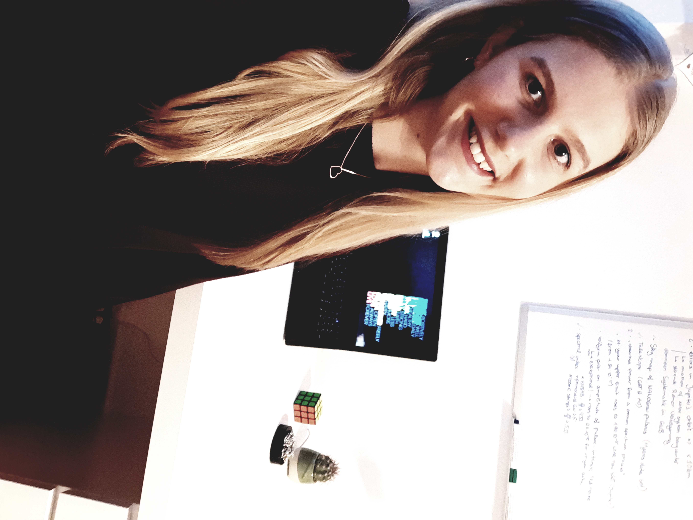

Mein Name ist Sarah und ich führe diese Webseite, sowie den Instagram Account „fit_female_physicist“ und die Twitter und Pinterest Accounts „sarah_physics“. Ich bin 26 Jahre alt und komme aus Deutschland.
Aktuell studiere ich Physik im Master mit dem Schwerpunkt Atmosphärenphysik und Atmosphärenforschung. Mit der Masterarbeit fange ich aller Voraussicht nach im April an. Neben dem Studium arbeite ich als wissenschaftliche Hilfskraft (WHF) in der Arbeitsgruppe „Atmosphärenphysik und -Forschung“ an meiner Uni.
Im Januar 2021 habe ich mich dann dazu entschieden meinen Alltag als Physikstudentin auf Instagram zu teilen. Einer der Gründe hierfür war zunächst, dass ich mich im Uni@home Format nicht wirklich motivieren konnte und meine Produktivität im Keller war. Schnell habe ich neue Motivation gefunden und mich mit anderen Wissenschaftskommunikatoren und Studybloggern ausgetauscht. Diese Community hat mich also wieder zurück in die Bahn geworfen. Ich würde behaupten, ich war sogar motivierter und produktiver als jemals zuvor.
Angeregt durch diese tollen Erfahrungen, habe ich mich gut ein Jahr später (im Februar 2022) dazu entschieden, diesen Blog zu starten, um noch mehr Menschen zu erreichen. Es ist so schön zu sehen, wie ich durch meine Beiträge Andere zu Höchstleistungen motivieren kann. Wenn du also auch gerade etwas unmotiviert bist und ein paar Anregungen benötigst, bist du hier genau richtig!
Ich teile hier umsetzbare Tipps und Tricks, die ich während meines Physikstudiums gelernt habe und gebe praktische Lebensratschläge wie auch du deine Persönlichkeitsentwicklung auf das nächste Level heben kannst. Außerdem möchte ich gerne verschiedene Bücher vorstellen, die mir persönlich ungemein geholfen haben der Mensch zu werden, der ich heute bin.
Habe ich dein Interesse geweckt? Hier kannst du dich für meinen KOSTENLOSEN Newsletter anmelden.